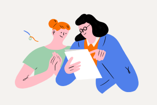
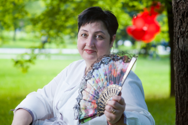
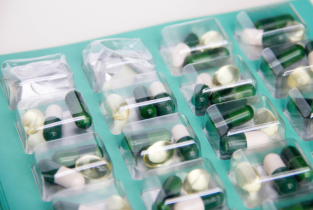

Проект «Новая жизнь» — лауреат премии «Будем жить!»
подробнееПолезные статьи, советы, истории
Как жить после операции. С чего начать
совет

Как жить после операции.
С чего начать
При терапии рака важно действовать быстро. Часто пациенты боятся, что бесплатные обследования придется долго ждать, и делают диагностику за деньги.
совет
Истории женщин, которые принимают Промисан
специальный проект
«Я принимаю Промисан»
Читайте истории женщин
-
«Очень верю, что Промисан мне поможет!»
Меня зовут Наталья. В 2013 году у меня нашли рак молочной железы — люминальный гормонозависимый рак. сделали операцию
Подробнее
-
«Верю — Промисан поможет мне избежать рецидива»
Меня зовут Ольга. В 2015 году я сделала операцию — мастэктомию с одномоментной пластикой в ФГБУ «НМИЦ онкологии им. Н. Н. Блохина» мне поставили диагноз рак
Подробнее
-
«...ведь так хочется, чтобы ремиссия была пожизненной!»
Меня зовут Царенко Лариса Алексеевна. 12 лет назад у меня нашли рак молочной железы, сделали операцию гормонозависимый рак
Подробнее
-
«Я уверена в отличном результате и, конечно, очень хочется стойкой ремиссии»
Меня зовут Алла. В 2015 году мне поставили диагноз рак молочной железы и сразу была сделана операция мастэктомию с одномоментной
Подробнее
Полезные советы, статьи, юридическая помощь
-
Как получить бесплатную медицинскую помощь при онкологии
интервью
-
 Какие льготы положены онкобольным
юридическая помощь
-
Какие льготы положены онкобольным
юридическая помощь
-
 История Оксаны
история
-
 Какие лекарства положены онкобольным бесплатно
юридическая помощь
-
Питание при раке молочной железы
совет
встречи и консультации
-
Личные консультации с онкологом
На бесплатные личные консультации приглашаются женщины с раком молочной железы и эндометрия — в том числе наследственный рак.
записатьсяконсультации
-
Личные консультации с онкологом
На бесплатные личные консультации приглашаются женщины:
записаться
на этапе становления диагноза; в ремиссии до 1,5 лет и более; во время возникновения рецидива болезни.консультации
-
Встреча группы взаимопомощи пациентов
Ассоциация «Здравствуй!» приглашает на встречу группу взаимопомощи онкологических пациентов, которая состоится 11 февраля в 18:00 по адресу: улица Валовая, д. 21, к. 125.
записатьсявстречи
Рак груди первой стадии
Симптомы, факторы риска, стадии и возможности лечения
рак молочной железы
-
Методы лечения рака молочной железы.
Рассмотрим, какие анализы показывают рак яичников и как интерпретировать результат. рак яичников и как интерпретировать результат.
Подробнее
-
Защита от рака: что нужно знать женщинам об индол- 3 -карбиноле.
Как брокколи и другие крестоцветные помогают снижать риск развития опухолей и образований
Подробнее
-
Беспокоят приливы. Как правильно корректировать состояние.
Питание может минимизировать действия препараров и поддержать жизненные силы.
Подробнее
-
Как помочь своей коже при лечении рака молочной железы.
Механизмы влияния страха на качество жизни. Схемы работы с тревожностью. Механизмы влияния страха на...
Подробнее
Полезные интервью, статьи, советы, истории
наши специалисты
-
1Троик Евгения Борисовна
гинеколог- эндокринолог
Бесплатно консультирует в рамках проекта «Новая жизнь» . Является юристом Ассоциации онкологических пациентов «Здравствуй!». Консультирует пациентов с онкологическим заболеванием и родственников пациентов по вопросам получения медицинской помощи и защиты прав.
Подробнее
задать вопрос -
2Аверкова Екатерина Григорьевна
хирург -онкопсихолог, врач - психотерапевт
Оказывает психологическую и психотерапевтическую помощь онкопациентам и их родственникам для формирования адекватной картины заболевания, разработки моделей поведения и плана образа жизни. Екатерина действующий член международной психо-онкологической ассоциации.
Подробнее
задать вопрос -
3Троик Евгения Борисовна
гинеколог- эндокринолог
Консультирует по вопросам скрининга—первичного выявления опухолей репродуктивной системы женщин, при отсутствии проявлений заболевания и по вопросам гинекологической эндокринологии — диагностика, лечение и профилактика заболеваний, вызванных изменением гормонального фона.
Подробнее
задать вопрос -
4Букша Анна Юрьевна
медицинский физик
Если пациенту была назначена лучевая терапия и есть вопросы касательно назначенного лечения лучами, Анна Юрьевна поможет ответить на волнующие вопросы, учитывая диагноз и возможности центра, а также оборудования, на котором будет лечиться пациент. Обеспечивает точность при облучении.
Подробнее
задать вопрос -
5Букша Анна Юрьевна
медицинский физик
Если пациенту была назначена лучевая терапия и есть вопросы касательно назначенного лечения лучами, Анна Юрьевна поможет ответить на волнующие вопросы, учитывая диагноз и возможности центра, а также оборудования, на котором будет лечиться пациент. Обеспечивает точность при облучении.
Подробнее
задать вопрос